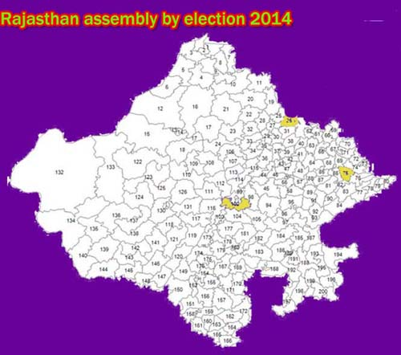

nasirabad rajasthan assembly by election 2014
Click here for rajasthan nasirabad assembly by elections 2014 results live
rajasthan assembly by elections 2014 results live website list
rajasthan assembly by election Results update Will be available at the following mirror websites sites after 8:00 AM on 16th September, 2014 Mirror websites: http://eciresults.nic.in & http://eciresults.ap.nic.in

click here for nasirabad rajasthan by election 2014 assembly constituency live update results
nasirabad rajasthan by election 2014 date: 13.09.2014 Saturday
nasirabad rajasthan by election 2014 result date:- 16.09.2014 Tuesday
rajasthan nasirabad Current MLA:
nasirabad rajasthan by election 2014 assembly constituency map
nasirabad is a village and a Mandal in the state of rajasthan in India. nasirabad is an assembly constituency in rajasthan.